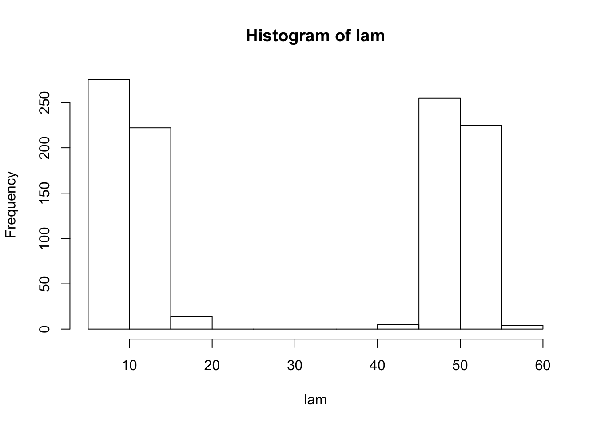
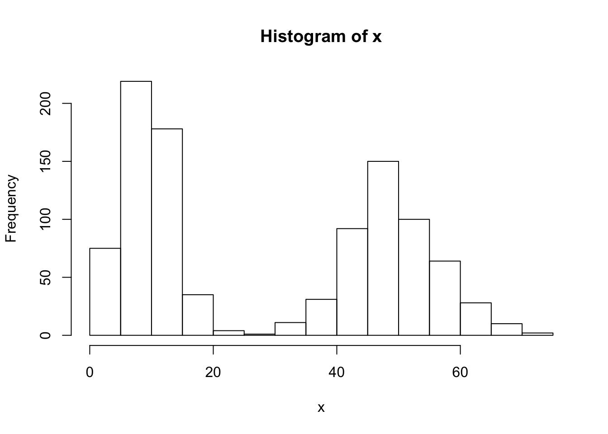
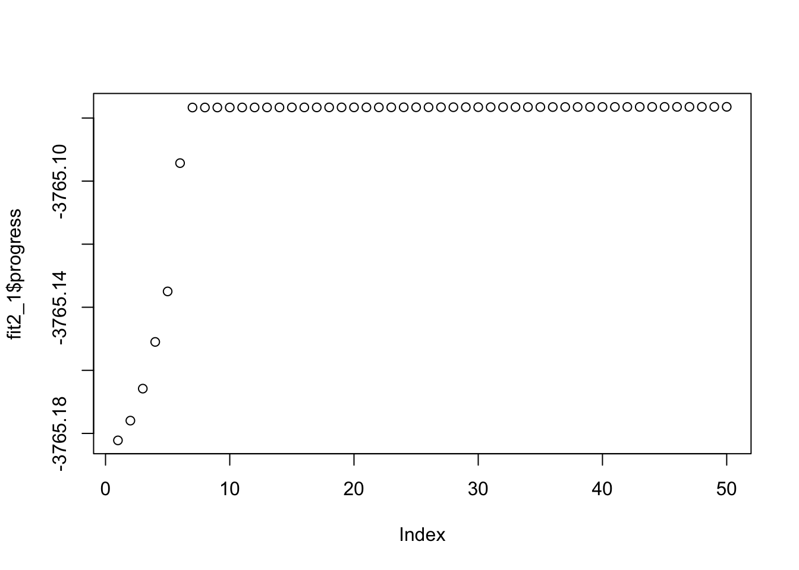
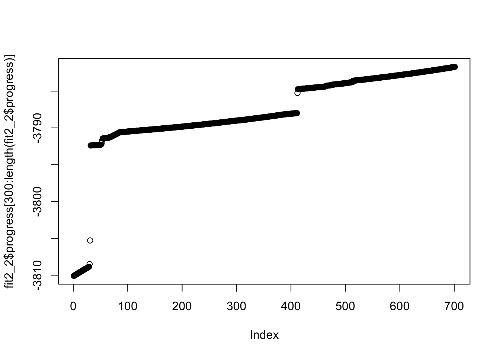
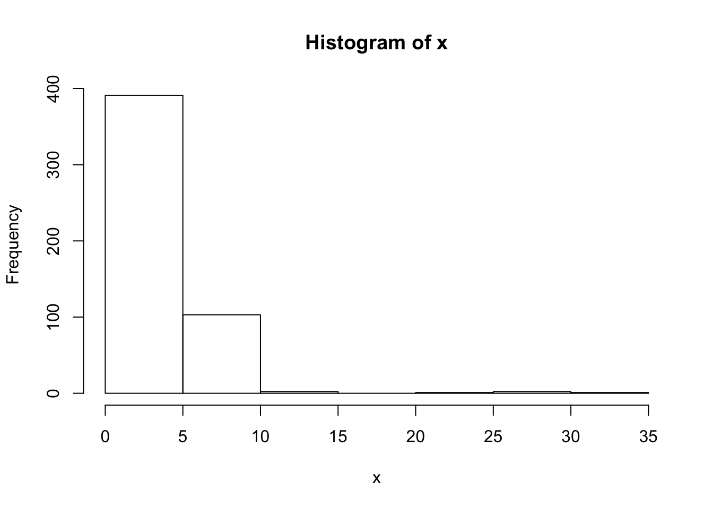
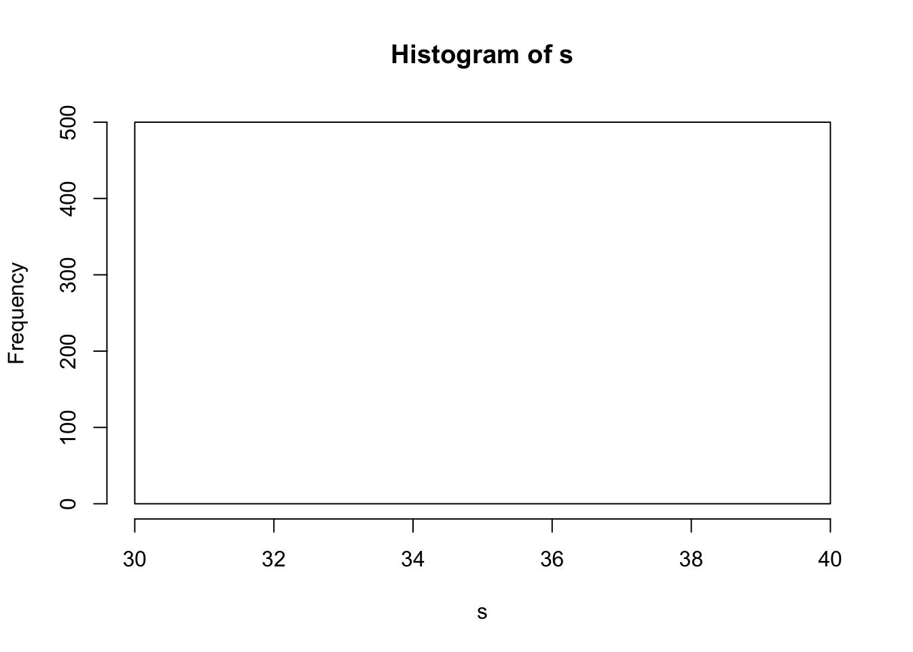

Last updated: 2020-01-16
Checks: 7 0
Knit directory: ebpmf_demo/
This reproducible R Markdown analysis was created with workflowr (version 1.5.0). The Checks tab describes the reproducibility checks that were applied when the results were created. The Past versions tab lists the development history.
Great! Since the R Markdown file has been committed to the Git repository, you know the exact version of the code that produced these results.
Great job! The global environment was empty. Objects defined in the global environment can affect the analysis in your R Markdown file in unknown ways. For reproduciblity it’s best to always run the code in an empty environment.
The command set.seed(20190923) was run prior to running the code in the R Markdown file. Setting a seed ensures that any results that rely on randomness, e.g. subsampling or permutations, are reproducible.
Great job! Recording the operating system, R version, and package versions is critical for reproducibility.
Nice! There were no cached chunks for this analysis, so you can be confident that you successfully produced the results during this run.
Great job! Using relative paths to the files within your workflowr project makes it easier to run your code on other machines.
Great! You are using Git for version control. Tracking code development and connecting the code version to the results is critical for reproducibility. The version displayed above was the version of the Git repository at the time these results were generated.
Note that you need to be careful to ensure that all relevant files for the analysis have been committed to Git prior to generating the results (you can use wflow_publish or wflow_git_commit). workflowr only checks the R Markdown file, but you know if there are other scripts or data files that it depends on. Below is the status of the Git repository when the results were generated:
Ignored files:
Ignored: .RData
Ignored: .Rhistory
Ignored: .Rproj.user/
Ignored: analysis/anchor_word_model_swimmer_cache/
Ignored: analysis/compare_GH_cache/
Ignored: analysis/nmf_anchor_word3_cache/
Ignored: analysis/nmf_anchor_word4_cache/
Ignored: analysis/nmf_sparse10_cache/
Ignored: analysis/nmf_sparse8_cache/
Ignored: analysis/nmf_sparse9_cache/
Untracked files:
Untracked: Rplot.png
Untracked: Untitled.Rmd
Untracked: Untitled.html
Untracked: analysis/.ipynb_checkpoints/
Untracked: analysis/Experiment_ebpmf_simple.Rmd
Untracked: analysis/anchor_word_model1.Rmd
Untracked: analysis/anchor_word_model2.Rmd
Untracked: analysis/anchor_word_model3.Rmd
Untracked: analysis/debug_ebpmf_two_gamma.Rmd
Untracked: analysis/demo_ebpmf_beta_gamma.Rmd
Untracked: analysis/demo_ebpmf_two_gamma2.Rmd
Untracked: analysis/demo_ebpmf_two_gamma_cache_old/
Untracked: analysis/draft.Rmd
Untracked: analysis/ebpm_gamma_mixture_experiment.Rmd
Untracked: analysis/ebpm_two_gamma_test.R
Untracked: analysis/ebpmf_demo.Rmd
Untracked: analysis/ebpmf_rank1_demo2.Rmd
Untracked: analysis/investigate_nmf_sparse.Rmd
Untracked: analysis/nmf_anchor_word4.Rmd
Untracked: analysis/nmf_symm.Rmd
Untracked: analysis/play_prior.Rmd
Untracked: analysis/plot_g.Rmd
Untracked: analysis/softmax_experiments.ipynb
Untracked: cache/
Untracked: code/anchor-word-recovery/
Untracked: data/anchor_word_model1.csv
Untracked: data/nmf_anchor_word3_A.csv
Untracked: data/nmf_anchor_word3_W.csv
Untracked: data/nmf_anchor_word3_X.csv
Untracked: data/nmf_anchor_word4_A.csv
Untracked: data/nmf_anchor_word4_W.csv
Untracked: data/nmf_sparse8_fit_ebpmf_gm_mle.Rds
Untracked: data/nmf_sparse8_fit_ebpmf_gm_mlem.Rds
Untracked: data/swimmer.mat
Untracked: figure/
Untracked: verbose_log_1571583163.21966.txt
Untracked: verbose_log_1571583324.71036.txt
Untracked: verbose_log_1571583741.94199.txt
Untracked: verbose_log_1571588102.40356.txt
Unstaged changes:
Modified: .gitignore
Modified: analysis/Compare_ebpmf_nmf.Rmd
Modified: analysis/Compare_ebvaepm_ebpm.Rmd
Modified: analysis/Experiment_ebpmf_rank1.Rmd
Modified: analysis/demo_ebpm_beta_gamma2.Rmd
Modified: analysis/ebpm_demo.Rmd
Modified: analysis/nmf_anchor_word2.Rmd
Modified: analysis/nmf_anchor_word3.Rmd
Modified: analysis/nmf_sparse.Rmd
Modified: analysis/nmf_sparse2.Rmd
Modified: analysis/nmf_sparse3.Rmd
Modified: analysis/nmf_sparse6.Rmd
Modified: analysis/nmf_sparse7.Rmd
Modified: analysis/nmf_sparse8.Rmd
Modified: analysis/nmf_sparse9.Rmd
Modified: analysis/softmax_experiments.Rmd
Modified: analysis/test_ebpm_gamma_mixture_single_scale.Rmd
Modified: data/nmf_sparse8_fit_ebpmf_gm.Rds
Note that any generated files, e.g. HTML, png, CSS, etc., are not included in this status report because it is ok for generated content to have uncommitted changes.
These are the previous versions of the R Markdown and HTML files. If you’ve configured a remote Git repository (see ?wflow_git_remote), click on the hyperlinks in the table below to view them.
| File | Version | Author | Date | Message |
|---|---|---|---|---|
| Rmd | 973b7ba | zihao12 | 2020-01-16 | ebpm_two_gamma_debug2 |
Current ebpm_two_gamma method in ebpm package has severe optimization issue, as a result the ELBO does not monotonically increase in ebpmf. I want to build a more stable method, with EM. I call it ebpm_two_gamm2 for this analysis.
The issue of ebpm_two_gamma is investigated here: https://zihao12.github.io/ebpmf_demo/numerical_lgamma.html.
The algorithm is very similar to Gaussion mixture, except the parameters for the two components are not analytic: we need to maximize weighted sum of negative binomial log-likelihoods (with nlm; I only use one nlm step for every M-step: control = list(ndigit = 8, stepmax = 1, iterlim = 1, check.analyticals = FALSE)).
rm(list = ls())
library(stats) ## use nlm solver
library(ebpm)
set.seed(123)
ebpm_two_gamma2 <- function(x, s, n_iter){
init = init_two_gamma(x, s)
fit = ebpm_two_gamma_util(x = x, s = s, n_iter = n_iter, pi1 = init$pi0,
a1 = init$shape1, b1 = 1/init$scale1,
a2 = init$shape2, b2 = 1/init$scale2)
fit$init = init
return(fit)
}
init_two_gamma <- function(x, s){
#browser()
## use k-means to find 2 clusters
clst = try(kmeans(x = x/s, centers = 2))
if(class(clst) == "try-error"){ ## then probably there should be only 1 cluster
pi0 = 0
shape1 = 1; scale1 = 1;
shape2 = 1; scale2 = 1;
}else{
## initialzie pi0
pi0 = sum(clst$cluster == 1)/length(x)
## estimate shape1, scale1
idx = which(clst$cluster == 1)
fit_ = ebpm_point_gamma(x = x[idx], s = s[idx], pi0 = 0)
shape1 = fit_$fitted_g$shape
scale1 = fit_$fitted_g$scale
## estimate shape2, scale2
idx = which(clst$cluster == 2)
fit_ = ebpm_point_gamma(x = x[idx], s = s[idx], pi0 = 0)
shape2 = fit_$fitted_g$shape
scale2 = fit_$fitted_g$scale
}
return(list(pi0 = pi0, shape1 = shape1, scale1 = scale1, shape2 = shape2, scale2 = scale2))
}
## model:
## x_i | lambda_i ~ Pois(s_i lambda_i)
## lambda_i ~ pi1 * gamma(.;a1, b1) + pi2 * gamma(.;a2, b2)
## input
## x, s are vectors of the same length
## pi1, a1, b1, a2, b2 are initialization for the parameters
## output
## list(param, ll)
ebpm_two_gamma_util <- function(x, s, n_iter, pi1, a1, b1, a2, b2){
control = list(ndigit = 8, stepmax = 1, iterlim = 1, check.analyticals = FALSE)
n = length(x)
#browser()
progress = replicate(n_iter, -1e+20)
for(i in 1:n_iter){
### E-step: compute Z | X, pi^0
w1 = compute_posterior_w(x, s, pi1, a1,b1, a2, b2)
w2 = 1 - w1
### M-step:
## update pi1
pi1 = sum(w1)/n
## update a1, b1
tmp_ab = update_ab(w1, x, s, a1, b1, control)
a1 = tmp_ab$a
b1 = tmp_ab$b
## update a2, b2
tmp_ab = update_ab(w2, x, s, a2, b2, control)
a2 = tmp_ab$a
b2 = tmp_ab$b
## record progress
progress[i] = compute_ll(x, s, pi1, a1, b1, a2, b2)
#print(sprintf("%d %f", i, progress[i]))
}
param = list(pi1 = pi1, a1 = a1, b1 = b1, a2 = a2, b2 = b2)
return(list(param = param, progress = progress))
}
## compute NB(x, size = a, prob = p)
compute_nb <- function(x, a, p)
exp(compute_nb_log(x, a, p))
## compute log NB(x, size = a, prob = p)
## NB(x, a, p) = Gamma(x + a)/(x!*Gamma(a)) * p^a * (1-p)^x
compute_nb_log <- function(x, a, p){
tmp = x*log(1-p)
tmp[x==0] = 0
return( lgamma(x + a) - lgamma(x + 1) - lgamma(a) + a*log(p) + tmp )
}
compute_ll <- function(x, s, pi1, a1, b1, a2, b2){
n = length(x)
nb1 = compute_nb(x, a = replicate(n, a1), p = b1/(b1 + s))
nb2 = compute_nb(x, a = replicate(n, a2), p = b2/(b2 + s))
return(sum(log(pi1*nb1 + (1 - pi1)*nb2)))
}
## compute posterior for w: P(Z | X, pi^0)
compute_posterior_w <- function(x, s, pi1, a1,b1, a2, b2){
n = length(x)
## compute posterior Z | X, pi1^0
w1 = pi1 * compute_nb(x, replicate(n, a1), b1/(b1+s)) ## P(Z = 1 | X, pi1^0), not scaled yet
w2 = (1 - pi1) * compute_nb(x, replicate(n, a2), b2/(b2+s)) ## P(Z = 1 | X, pi1^0), not scaled yet
w1 = w1/(w1 + w2)
return(w1)
}
## update a, b in weighted NB
## max_{a,b} sum_i w_i log NB(x_i, a, b/b+s_i)
update_ab <- function(w, x, s, a, b, control){
fn_params = list(x = x, s = s, w = w)
init_t = c(log(a), log(b))
opt = do.call(nlm, c(list(obj_w_nb, init_t), fn_params, control))
log_likelihood = -obj_w_nb(opt$estimate, x, s, w)
a = exp(opt$estimate[1])
b = exp(opt$estimate[2])
return(list(a = a, b = b))
}
compute_weighted_nb_log <- function(w, x, a, p)
sum( w * compute_nb_log(x,a,p))
## obj for nlm
## par = c(log(a), log(b))
obj_w_nb <- function(par, x, s, w){
n = length(x)
a = exp(par[1])
b = exp(par[2])
return(- compute_weighted_nb_log(w, x,replicate(n, a), b/(b + s)))
}
simulate_two_gamma_poisson <- function(pi1, a1, b1, a2, b2, s, n_sample = 1000){
lam1 = rgamma(n = n_sample, shape = a1, rate = b1)
lam2 = rgamma(n = n_sample, shape = a2, rate = b2)
z = rbinom(n = n_sample, size = 1, prob = pi1)
lam = z * lam1 + (1-z) * lam2
x = rpois(n = n_sample, lambda = s * lam)
return(list(x = x, lam = lam))
}The simulated dataset is easily separable into two clusters. I run ebpm_two_gamma and ebpm_two_gamma2 (with different initializations for the latter).
pi1 = 0.5
a1 = 500; b1 = 10
a2 = 20; b2 = 2
n_sample = 1000
s = replicate(n_sample, 1)
tmp_sample = simulate_two_gamma_poisson(pi1, a1, b1, a2, b2, s, n_sample)
x = tmp_sample$x
lam = tmp_sample$lam
hist(lam)
hist(x)
fit1 = ebpm_two_gamma(x, s)
## initialize from truth
n_iter1 = 50
fit2_1 = ebpm_two_gamma_util(x, s, n_iter1, pi1, a1, b1, a2, b2)
## initialize from elsewhere
n_iter2 = 1000
pi1 = 0.1
a1 = 10; b1 = 10
a2 = 100; b2 = 100
fit2_2 = ebpm_two_gamma_util(x, s, n_iter2, pi1, a1, b1, a2, b2)## loglikelihood from ebpm_two_gamm
fit1$log_likelihood[1] -3765.132## loglikelihood from EM (initialized from truth)
fit2_1$progress[length(fit2_1$progress)][1] -3765.076## loglikelihood from EM (initialized elsewhere)
fit2_2$progress[length(fit2_2$progress)][1] -3781.714## plot loglikelihood for EM (initialized from truth)
plot(fit2_1$progress)
## plot loglikelihood for EM (initialized elsewhere)
plot(fit2_2$progress[300:length(fit2_2$progress)])
## fitted g from ebpm_two_gamma
fit1$fitted_g$pi0
[1] 0.5124369
$shape1
[1] 19.04379
$scale1
[1] 0.5149609
$shape2
[1] 484.8973
$scale2
[1] 0.1026921## fitted g from EM (initialized from truth)
fit2_1$param$pi1
[1] 0.4889788
$a1
[1] 498.9402
$b1
[1] 10.01919
$a2
[1] 18.05762
$b2
[1] 1.841997## fitted g from EM (initialized elsewhere)
fit2_2$param$pi1
[1] 0.4890944
$a1
[1] 528.4316
$b1
[1] 10.61276
$a2
[1] 116.3891
$b2
[1] 11.89328Note that the mixture means are similar, but the mixture variance can be pretty different.
ebpm_two_gamma could failI use k-means to initialize the two methods (the initialization is random).
data = readRDS("../ebpm/data/ebpmf_two_gamma_issue2.Rds")
x = data$x
s = data$s
hist(x)
hist(s)
print("the following are the possible ll from ebpm (initialized with K-means)")[1] "the following are the possible ll from ebpm (initialized with K-means)"replicate(20,ebpm_two_gamma(x = x, s = s)$log_likelihood) [1] -1121.936 26940.280 -1138.841 26940.280 -1121.936 -1121.936 -1138.841
[8] 26940.280 -1138.841 26940.280 -1138.841 -1138.841 26940.280 26940.280
[15] -1121.936 26940.280 -1121.936 26940.280 26940.280 26940.280n_iter = 100
print("the following are the possible ll from EM (initialized with K-means)")[1] "the following are the possible ll from EM (initialized with K-means)"replicate(20, ebpm_two_gamma2(x, s, n_iter)$progress[n_iter]) [1] -1139.158 -1139.058 -1139.058 -1139.058 -1139.158 -1139.058 -1139.058
[8] -1139.158 -1139.158 -1139.158 -1139.058 -1139.058 -1139.058 -1139.058
[15] -1139.058 -1139.058 -1139.058 -1139.158 -1139.058 -1139.058For EM: there are at least two possible local optimal, depending on the initialization. Shown below:
stop = FALSE
while(!stop){
fit_ = ebpm_two_gamma2(x, s, n_iter)
ll = fit_$progress[n_iter]
if(ll < -1139){
stop = TRUE
print(sprintf("ll = %f", ll))
print("init is")
print(fit_$init)
print("fitted_g")
print(fit_$param)
}
}[1] "ll = -1139.057922"
[1] "init is"
$pi0
[1] 0.622
$shape1
[1] 101.3007
$scale1
[1] 0.0003756674
$shape2
[1] 12.93063
$scale2
[1] 0.01223998
[1] "fitted_g"
$pi1
[1] 0.06503908
$a1
[1] 31.38781
$b1
[1] 8140.093
$a2
[1] 2.457064
$b2
[1] 27.63506stop = FALSE
while(!stop){
fit_ = ebpm_two_gamma2(x, s, n_iter)
ll = fit_$progress[n_iter]
if(ll > -1135){
stop = TRUE
print(sprintf("ll = %f", ll))
print("init is")
print(fit_$init)
print("fitted_g")
print(fit_$param)
}
}[1] "ll = -1122.935793"
[1] "init is"
$pi0
[1] 0.008
$shape1
[1] 389.082
$scale1
[1] 0.001859511
$shape2
[1] 2.577049
$scale2
[1] 0.03039456
[1] "fitted_g"
$pi1
[1] 0.007887378
$a1
[1] 390.6859
$b1
[1] 538.4548
$a2
[1] 2.572589
$b2
[1] 32.8257print(length(x))[1] 500replicate(5, system.time(fit_ <- ebpm_two_gamma2(x, s, n_iter = 100))[["elapsed"]])[1] 0.875 0.891 0.895 0.855 0.925replicate(5, system.time(fit_ <- ebpm_two_gamma(x, s))[["elapsed"]])[1] 0.129 0.107 0.124 0.115 0.133In the examples above, we can see:
current ebpm_two_gamma has severe optimization issue, under some initializations
not sure if ebpm_two_gamma2 (EM) suffers the same issue. But I haven’t seen it so far. Will do more testing
If we use ebpm_two_gamma in ebpmf, how many EM iterations do we need? Since it will be very slow if we use too many EM iterations.
sessionInfo()R version 3.5.1 (2018-07-02)
Platform: x86_64-apple-darwin15.6.0 (64-bit)
Running under: macOS 10.14
Matrix products: default
BLAS: /Library/Frameworks/R.framework/Versions/3.5/Resources/lib/libRblas.0.dylib
LAPACK: /Library/Frameworks/R.framework/Versions/3.5/Resources/lib/libRlapack.dylib
locale:
[1] en_US.UTF-8/en_US.UTF-8/en_US.UTF-8/C/en_US.UTF-8/en_US.UTF-8
attached base packages:
[1] stats graphics grDevices utils datasets methods base
other attached packages:
[1] ebpm_0.0.0.9008
loaded via a namespace (and not attached):
[1] workflowr_1.5.0 Rcpp_1.0.2 codetools_0.2-16 gtools_3.8.1
[5] rprojroot_1.3-2 digest_0.6.22 later_0.8.0 R6_2.4.0
[9] backports_1.1.5 git2r_0.26.1 magrittr_1.5 evaluate_0.14
[13] stringi_1.4.3 fs_1.3.1 promises_1.0.1 whisker_0.3-2
[17] rmarkdown_1.13 tools_3.5.1 stringr_1.4.0 glue_1.3.1
[21] mixsqp_0.2-3 httpuv_1.5.1 xfun_0.8 yaml_2.2.0
[25] compiler_3.5.1 htmltools_0.3.6 knitr_1.25